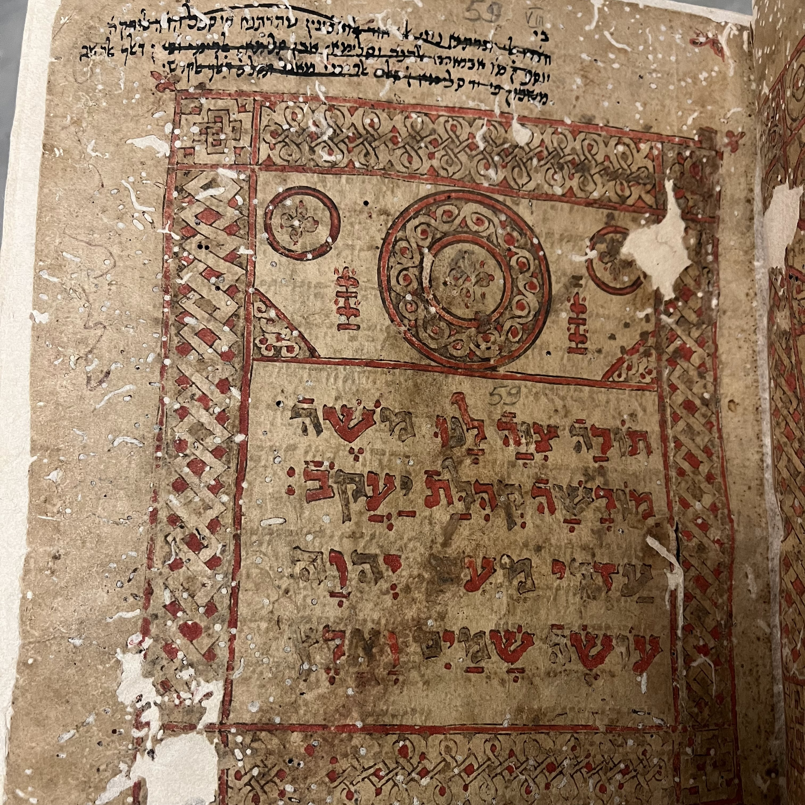
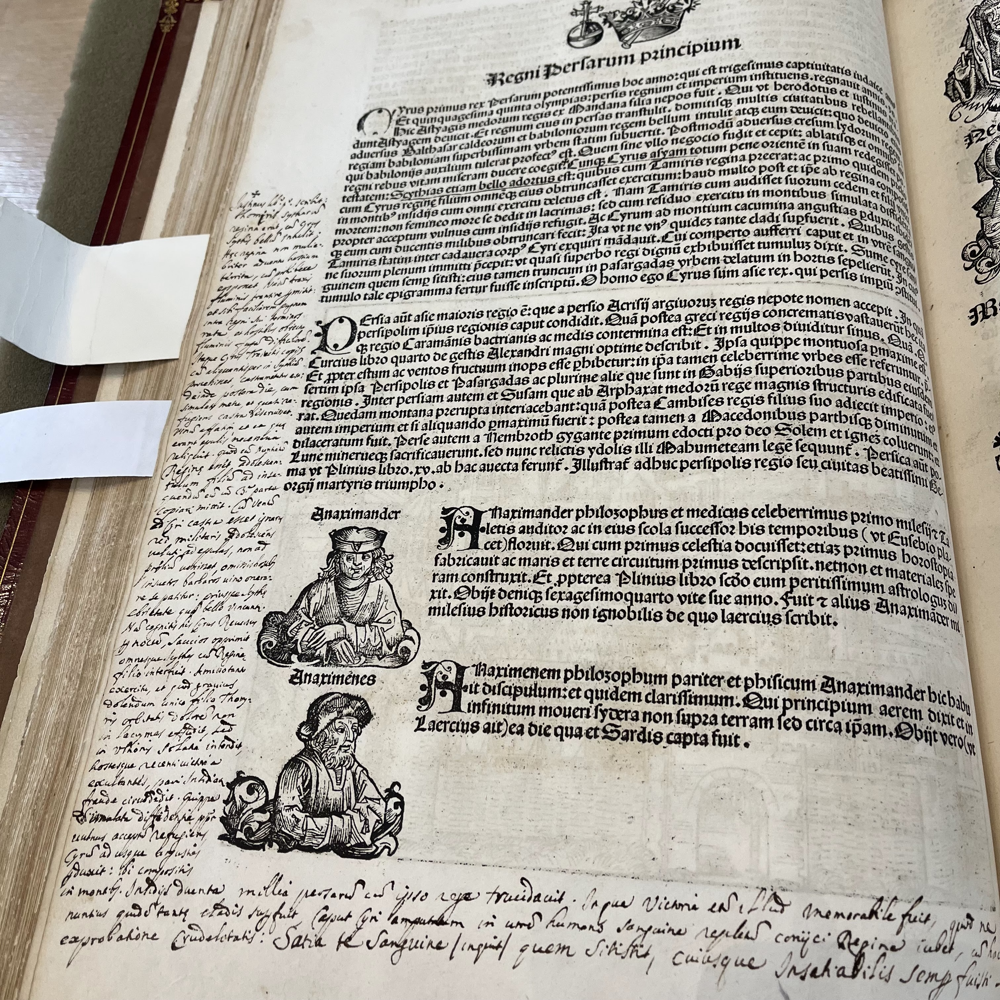
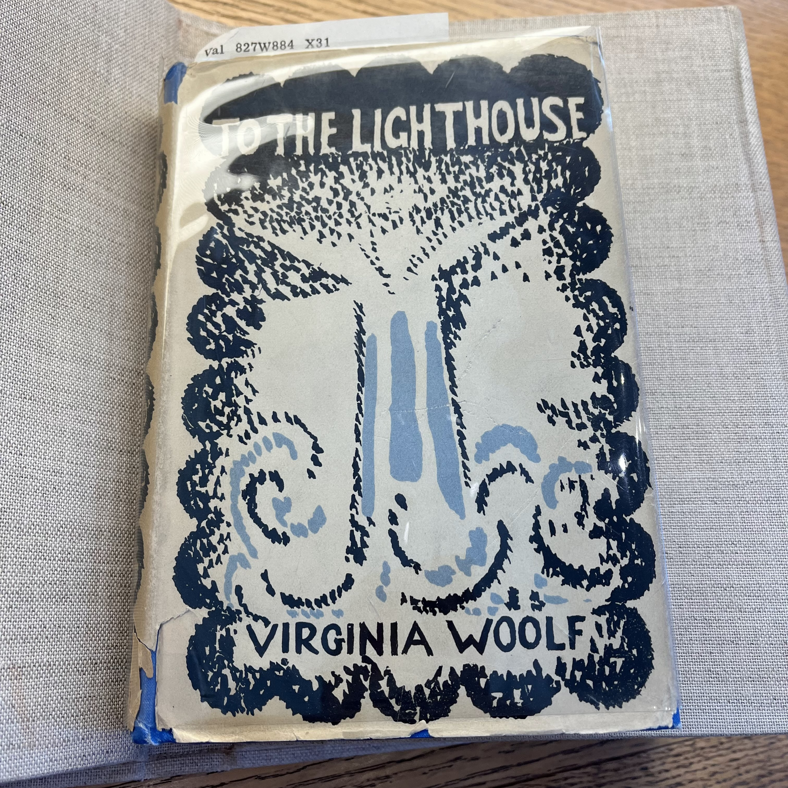
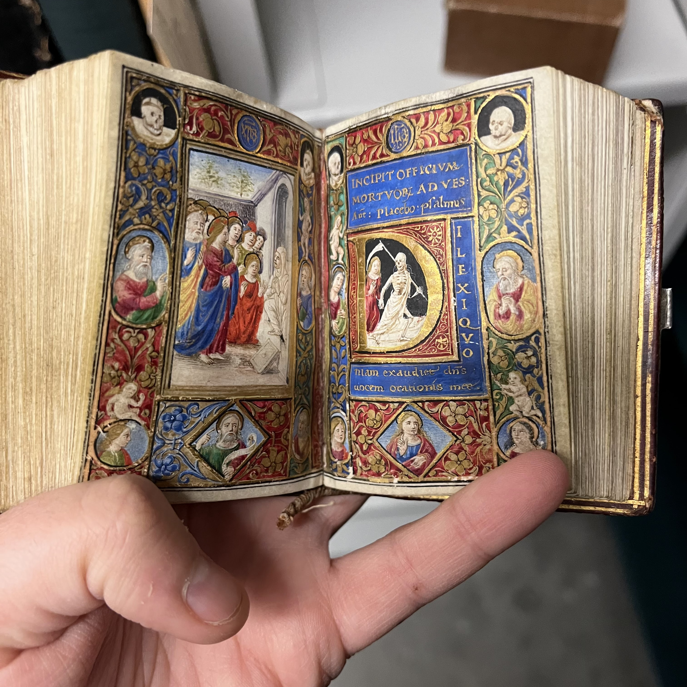

My journey in the field of archives began at Rauner Special Collections Library at Dartmouth College. The summer of 2022, I was did archival research at the library through Dartmouth's Historical Accountability Student Research Program, which "offers research opportunities for Dartmouth undergraduates to explore primary sources in our collections related to issues of diversity and inclusion in Dartmouth history." As a queer student studying English literature, I wanted to look into Dartmouth's queer history through the lens of works of fiction published in campus literary magazine.
After this research project, I knew I could not go back to the life I had before working in an archive, so I began working as a student assistant in the library. I worked with Jay Satterfield, Head of Rare Books and Special Collections.
Here are some cool objects I came across in the collection as a student assistant:
| Object | Description |
|---|---|
|  | This is a copy of the Taj Torah produced in Yemen c. 1400-1450. It is one of only three known Hebrew manuscripts with illustrated carpet pages. |
|  | This is a copy of Liber cronicarum (Nuremberg chronicle) that contains a lot of marginalia written by a prior owner/reader. The book is from 1493. |
|  | This is a first edition copy of Virginia Woolf's novel "To the Lighthouse," published by the Hogarth Press in 1927. |
|  | This is a palm-sized manuscript Book of Hours produced in Florence in the late 15th century. It was produced on uterine vellum made from the skin of unborn sheep or calves |
|
This is a page from an 1866 edition of Gardner’s Photographic Sketchbook of the War—a two-volume album of 100 original photographic prints of the American Civil War. |
And here are some pictures of me paging materials!
During my senior year, I also took various classes that involved work at Rauner Library. These classes included History of the Book, a critical museum studies class, and two others that culminated in digitial exhibits. You can find the exhibits for these two classes below.
A Tale of Three Administrations: Rev. Warner Traynham’s Experience as both Student and Dean
**Note on site accessibility: This exhibit was created using Omeka, and I no longer have access to the account. Therefore, I am unable to edit any formatting issues that have arisen since the site was published. Some sections of text are now very hard to read.
The below images all come from the digital exhibit and are photos that you can find at Rauner Library. The first is a photo of Dartmouth Christian Union members in 1957. Traynham is pictured 5th from left on the top row. The other two images are of articles written by Traynham.